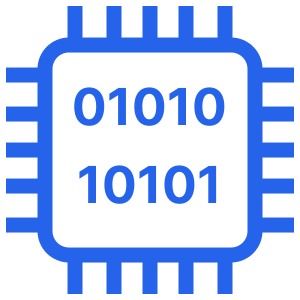

1. O Sistema Binário: A Linguagem Elétrica
No nível mais fundamental, o processador de um computador é composto por bilhões de micro-interruptores chamados transistores. Como um interruptor de luz, eles só possuem dois estados físicos: ligado ou desligado.
Para traduzir isso em dados, atribuímos o valor 1 para a presença de eletricidade e 0 para a ausência. Enquanto nós usamos o sistema decimal (base 10), as máquinas utilizam a Base 2. Toda imagem, vídeo ou som que você vê na tela é, no fundo, uma sequência astronômica desses dois dígitos.
